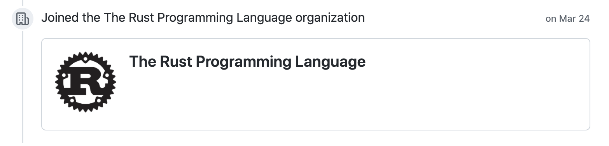
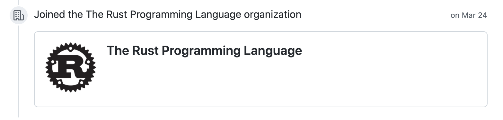

rust-lang/rust-clippy のメンテをしている
2021年3月の終わり頃に Rust Clippy チームのメンバーになった。メンバーというとわかりにくいが rust-lang/rust-clippy のいわゆるメンテナとなった。
OSS のメンテナとなるのは初めてだったが今のところ継続的にやれてる。来年も無理しない範囲でメンテを続けていくつもり。

22 December 2021
2021年3月の終わり頃に Rust Clippy チームのメンバーになった。メンバーというとわかりにくいが rust-lang/rust-clippy のいわゆるメンテナとなった。
OSS のメンテナとなるのは初めてだったが今のところ継続的にやれてる。来年も無理しない範囲でメンテを続けていくつもり。
